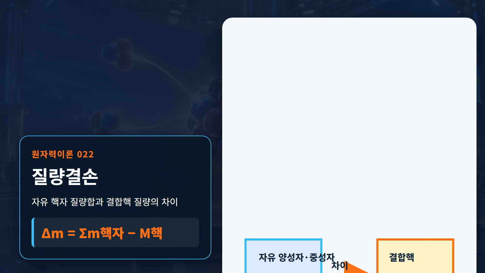
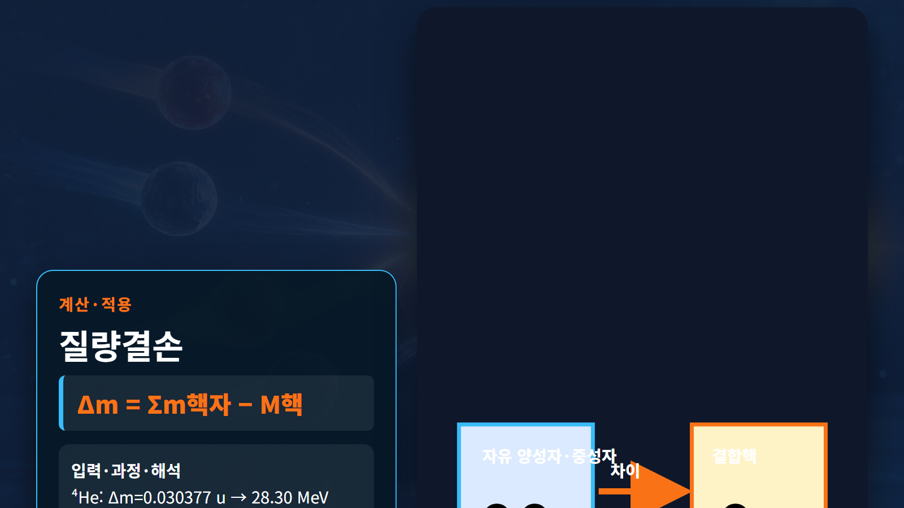

질량·에너지·핵반응 · 022
질량결손
결합된 원자핵의 질량이 자유 핵자 질량 합보다 작은 현상

질량결손 Δm은 원자핵을 이루는 양성자와 중성자를 서로 멀리 떨어진 자유입자로 놓았을 때의 질량 합에서 결합된 핵의 실제 질량을 뺀 값이다. 결합하면서 방출된 에너지만큼 계의 정지에너지가 낮아지기 때문에 결합된 핵이 더 가볍다. 이는 측정 누락이 아니라 에너지 보존의 결과다.
개념 정의
질량결손 Δm은 원자핵을 이루는 양성자와 중성자를 서로 멀리 떨어진 자유입자로 놓았을 때의 질량 합에서 결합된 핵의 실제 질량을 뺀 값이다. 결합하면서 방출된 에너지만큼 계의 정지에너지가 낮아지기 때문에 결합된 핵이 더 가볍다. 이는 측정 누락이 아니라 에너지 보존의 결과다.
핵물리의 양은 관측대상과 계의 경계를 먼저 정해야 한다. 같은 용어라도 원자 전체의 질량인지 원자핵만의 질량인지, 입자 하나의 에너지인지 거시계의 출력인지에 따라 계산에 포함할 항목이 달라진다.
작동 원리
핵질량을 쓰면 Δm=Zmp+Nmn−M핵이다. 원자질량을 쓰면 전자질량을 일관되게 포함하도록 Δm=Zm(¹H)+Nmn−M원자를 많이 사용한다. 결합에너지는 B=Δmc²이며 Δm이 클수록 핵을 완전히 분해하는 데 더 많은 에너지가 필요하다.
단계별 계산과 상황 예시
예시 1｜헬륨-4에 원자질량을 적용한다. 입력 ¹H=1.007825 u, 중성자=1.008665 u, ⁴He=4.002603 u이다. Δm=2(1.007825)+2(1.008665)−4.002603=0.030377 u, B=0.030377×931.494=28.30 MeV다.
예시 2｜이 결합에너지를 핵자수 A=4로 나누면 B/A=28.30/4=7.07 MeV/핵자다. 전체 결합에너지 28.30 MeV는 핵 전체를 분해하는 에너지이고 7.07 MeV/핵자는 다른 크기의 핵과 평균 결합 강도를 비교하는 값이다. 두 값을 혼용하면 안 된다.
| 구분 | 핵심 내용 | 판독 기준 |
|---|---|---|
| 자유 핵자 질량 합 | 4.032980 u | 헬륨-4 구성입자 |
| 실제 원자질량 | 4.002603 u | 결합된 상태 |
| 질량결손 | 0.030377 u | 결합에너지 28.30 MeV |

원자력공학의 실제 적용
핵질량표와 반응 Q값, 핵분열·핵융합 에너지 계산은 질량결손을 바탕으로 한다. 연료 핵과 생성물의 총질량 차이를 계산하면 방출 가능한 에너지 규모를 구할 수 있고, 정밀 질량 측정은 핵모형과 평가핵자료 검증에도 쓰인다.
실무 계산은 보존법칙으로 1차 검산한 뒤 핵자료 라이브러리와 실험 근거로 보정한다. 결과에는 사용한 핵종, 입사에너지, 단위, 자료 버전과 가정 조건을 함께 기록해야 다른 사람이 같은 판단을 재현할 수 있다.
예비평가에서는 대표값으로 물리적 규모와 방향을 확인하고, 상세평가에서는 에너지군 구조와 온도·재료조건을 실제 문제에 맞춘다. 계산 결과가 측정값과 다르면 식을 임의로 조정하기보다 입력자료, 단위 변환, 계의 경계, 누락된 반응채널 순으로 점검한다. 마지막에는 민감도 분석으로 어떤 입력이 결과를 지배하는지 확인한다. 이 절차는 개념식을 안전해석이나 실험계획에 연결할 때 과도한 단순화와 단위 오류를 줄여 준다. 또한 계산서에는 적용범위와 제외조건을 명시하고, 독립 검산자가 원자료부터 결과까지 추적할 수 있도록 중간값을 보존한다. 실험값이 없는 영역은 보간과 외삽을 구분하고 불확실성을 결과와 함께 제시한다.
오해와 적용 한계
질량결손을 빈 공간이나 없어진 물질로 설명하면 오해가 생긴다. 결합계의 장과 운동을 포함한 총에너지가 줄어든 만큼 정지질량이 감소한 것이다. 표의 원자질량과 핵질량을 섞지 말고, 전자 결합에너지가 필요한 정밀도인지도 확인해야 한다.
비유는 관계를 기억하는 데 유용하지만 실제 핵은 고전적인 공이나 행성계가 아니다. 양자상태, 확률분포와 보존법칙을 훼손하지 않는 범위에서만 비유를 사용하고, 정량값은 원자료로 돌아가 검증한다.
핵심 정리
질량결손은 정의, 보존관계, 적용 조건을 함께 읽어야 하는 개념이다. 두 예시처럼 입력값과 단위를 먼저 쓰고 계산과 해석을 분리하면 공식 암기를 넘어 결과의 의미를 확인할 수 있다. 실제 설계에서는 핵종별 자료와 불확실성을 적용해 개념식의 한계를 보완한다.